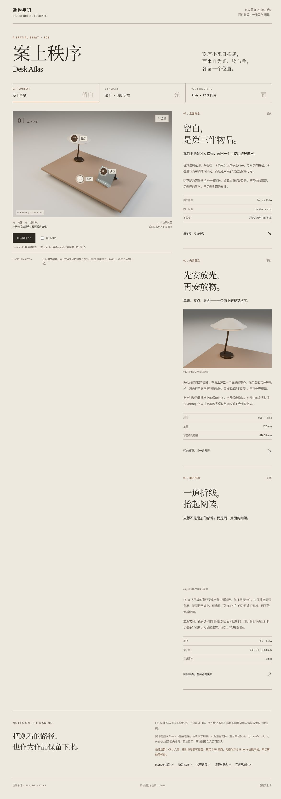
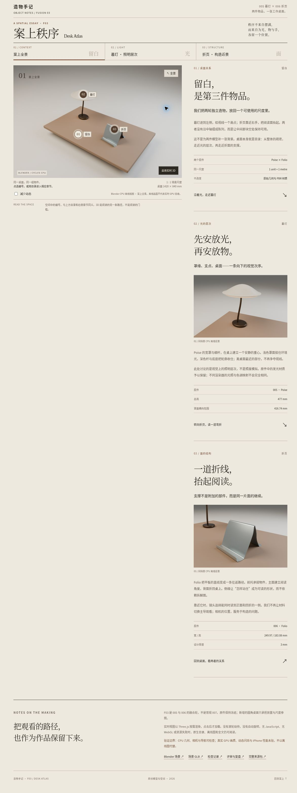
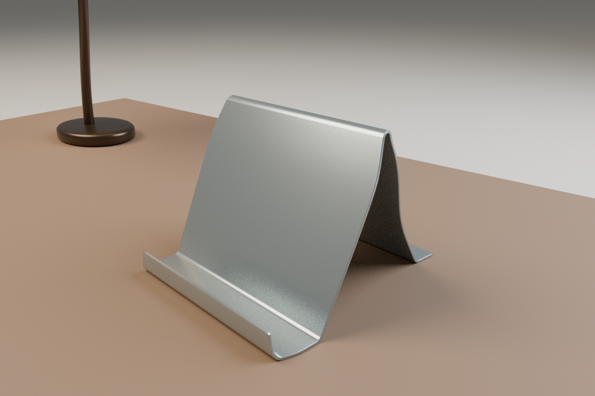

评审与修订日期：2026-11-01 UTC。v0.1.0 → v0.2.0，seed 0。
把第五轮 Poise 灯与第六轮 Folio 折板，放入同一张可阅读的桌面。物件的位置、之间的空处与相机的接近方向，承担章节组织；模型不随章节换掉。这是第三融合轮，不是常规 007。
原创之处：把“留白”也设为一个有空间坐标的阅读入口。三个入口是同一个桌面的三个问题，而不是三个产品标签。灯从光的层次阅读，折板从支撑结构阅读。没有复制参考项目的模型、图像、场景或代码。
以下均于 2026-11-01 UTC 访问。观察与推断分开；未把云浏览器无法运行的 GPU 体验称为亲测。
原作者项目页：Google Pocket Gallery。检索成功后，在原生云浏览器实际查看了项目页、首张轴测空间图和下一张轮播；页面说明可读到七个主题空间按藏品尺度组织。
原作者页面：Configurator。检索后，原生浏览器实际读取官方入口页。
原作者说明：Bruno's Home。实际浏览器读取了 HTML 版本；页面中的项目、联系信息与“3D version”链接均可读。
原作者项目说明：Zero Tech。检索与网页文本读取显示作者将实时 3D 与滚动导航结合。此处只把它作为作者对方法的说明，不冒称实际运行了该 GPU 体验。
1. 首屏封面过大。首版桌面约从 y455 开始，主要任务区被下沿截断。缩短页眉与标题上下距，英文副题并排，3D 控件移入画面角落。原生浏览器最终 DOM 视口为 1188×761，桌面 y257–694、目录 y168–237、3D 控件 y648–682，均可同屏。不是以隐藏正文或锁文档高度换来。
2. 热点视觉中心不严谨。首版整个标签的中心对齐投影，编号圆点偏离实际世界点；窄屏 01 与 03 过近。改为 44×44 目标中圆点居中，说明文字置于右侧；移动的是“留白”的世界点，而非凭空调屏幕百分比。268/330/655 px 场景宽度均做目标分离检查；窄屏隐藏文字但保留完整可访问名称。
3. 近景边缘热点被截。增加随容器宽度计算的像素安全边距，离屏或贴边热点隐藏，不钳制到错误位置；独立“全景”入口仍常驻。固定图像与场景比例为 1.5，无 contain 留边或 cover 裁剪的坐标错配。
4. 手机返回全景会跳过桌面。把原生 #overview 放到含桌面与首章的主区域，而非桌面下方的正文；#reading 单独负责跳过空间。无 JS 时这些也是真锚点。
5. 异步生命周期串扰。独立审查复现：3D 失败会误取消未完成的章节图解码。将路由与渲染会话的令牌完全拆开；3D 取消使用 AbortController，旧 parse 结果只清理自身，不接管新会话。新增主动取消与回离线，不再永久禁用入口。
6. Blender 检查把拆顶点当成损坏。Folio 重导出会为法线等数据拆分顶点。删除不合理的顶点数相等断言，分别记录数量，检查变换后世界点的双向距离；明确不保证拓扑索引同一。命令加 --python-exit-code 1，同时要求生成新报告并明确 passed，不以默认 exit 0 冒充通过。
7. 窄屏热点仍遮住原件。独立原生截图发现即使坐标准确、目标不重叠，大圆盘仍遮住灯罩。保留44×44透明目标，把可见圆片缩为19×19并去掉halo；原生320px复测确认尺寸，正文同时保留无标注近景。
8. 草图采样颗粒明显。保持原件和相机，最终离线图升为 1440×960、Cycles CPU 512 samples，无去噪。这个变化只改善离线样张，不计入实时性能。
早期内部构建还发现相机 keyframe 与当前 frame 不一致导致三个输出重复；已在渲染前切换命名帧，并加入三张图不同、实际 .blend 重开位置/FOV/朝向验证。该失败输出未进入公开包。
详见来源包 source/README.md 的复用契约。自己的前后页面截图和同相机 CPU 图保留；外部参考图片、原始浏览器日志、失败测试二进制不随包分发。


